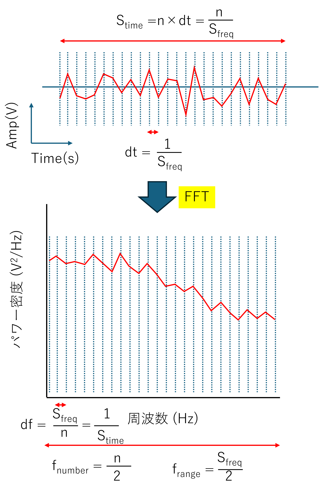

パワースペクトルの実際の作業内容-03
縦軸が，”パワースペクトル密度(nm2/Hz)
という点を確かめておきましょう．
実際に，ここ，に記したように，
\(\Large \displaystyle <x^2> = \int_{- \infty}^{\infty} \Phi (\omega) \ d \omega \)
とパワースペクトルの全積分が分散値となります．したがって，横軸がHzならば，縦軸が
分散÷Hz=nm2/Hz
となるわけです．
では，実際にそうなっているかパワースペクトルを作ってみて確認してみましょう．
まずは，おさらいから，実際の波形とフーリエ変換後の波形との関係を見ていきましょう．
ここ，に示したように，下図にあるように，
実際の波形の時間 (s) ： Stime
サンプル周波数 (1/s) ： Sfreq
サンプル時間分解能 (s) ： dt
実際の波形の数 ： n
とすると，
\(\Large \displaystyle S_{time} = n \times dt = \frac{n}{S_{freq}} \)
の関係になります．これにフーリエ変換すると，
フーリエ変換の横軸の最小単位 (Hz) ： df
フーリエ変換の横軸の数 ： fnumber
フーリエ変換の横軸のレンジ（最大値） ： frange
とすると，
\(\Large \displaystyle df = \frac{S_{freq}}{n} = \frac{1}{S_{time}}\)
\(\Large \displaystyle f_{number} = \frac{n}{2} \)
\(\Large \displaystyle f_{range} = \frac{S_{freq}}{2} \)
となります．

次ページから，実際にプログラムを作ってみましょう．